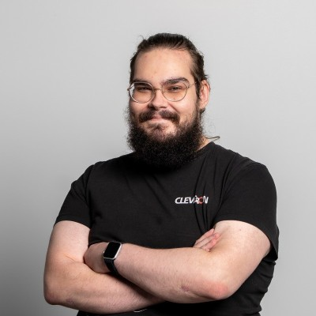

Lühike tutvustus
Tere! Minu nimi on Jaan Kollamaa ja ma töötan Cleveron AS-is Tehnilise Toe Vanemspetsialistina. Minu päevakord hõlmab keeruliste tehniliste probleemide lahendamist ja klienditoega.
Olenevalt sellest, et minu töökeskkond on sügavalt tehnoloogilised, on ma arendanud tugeva huvi uute lahenduste, automaatika ja tarkvaraarenduse vastu.
Hobid ja huvid
- Muusika – kuulan erinevaid žanre ja nautin elus kontsertide külastamist
- Arvutimängud – nii üksikmängijana kui ka koos sõpradega
- Tehnoloogia – jälgin uusi arenguid, proovin uusi vahendeid ja õpin programmeerimist
Kontakt
Leiad mind ka LinkedInist: linkedin.com/in/jaan-kollamaa
GitHub: github.com/jaankollamaa